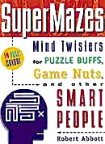
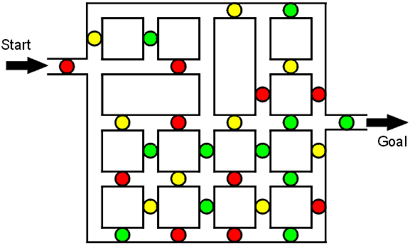
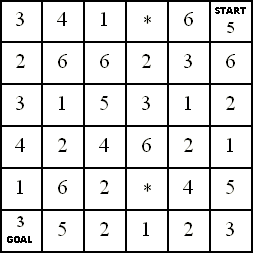

|
SuperMazes : Mind Twisters for Puzzle Buffs, Game Nuts, and Other Smart People
by Robert Abbott
$14.00
Paperback - 80 pages (October 1997) |
| This book is now out-of-print, but you can check Amazon to see if they have a copy. |
|
SuperMazes contains 24 mazes. Except they aren’t really mazes. They could better be described as “mazes- You’ve probably already tried the Sliding Door Maze, which is based on one of the harder mazes in the book. But it isn’t the hardest. That distinction belongs to the maze called “Where Are the Cows?” It is a flow chart with various boxes connected by a network of paths. Most of the boxes contain questions; there are two paths that exit each box; and the paths are labeled YES and NO. While you’re in this maze you have a pencil in each hand; one pencil points to one box and the other points to another box. On each move you choose one of the pencils, answer the question in the box, then follow the YES path or the NO path. Here’s a sample question: “Does the other pencil point to a box that has green text or has the word ‘green’?” Then there’s this very confusing question: “If you chose the other pencil, would it exit on a path marked NO?” This maze first appeared in Ian Stewart’s Mathematical Games column of the December 1996 Scientific American. |

|
Travel along the paths from Start to Goal and go through the dots in the order red-
Reviews |
|
Games magazine, June, 1998. Bored with rocket science? Give your cerebrum something really interesting to do with SuperMazes by Robert Abbott (Prima Publishing, $14). Abbott, the inventor of Eleusis and other games and the creator of the most imaginative and fantastic mazes ever seen, presents 24 masterpieces of his highly developed art in this large- SuperMazes by Robert Abbott, Prima Publishing, 1997, $14. Reviewed by Michael Keller. Since the publication of his brilliant Mad Mazes in 1990 (reviewed in WGR11, page 30), Bob Abbott has been inventing more mazes, which have appeared in Games, Discover, Scientific American, and other publications. For those unfamiliar with the earlier book or Bob’s work, his mazes are not the usual collection of simple paths and dead ends, but sequential movement puzzles in which rules govern where you can move next. Because of the way the mazes are built, it is often the case that you will have to revisit the same spot twice in the same maze in order to solve it (since the conditions under which you reached a spot affect where you can go next). This is particularly true in mazes where the rules can change during the maze: for example, in the Chess Maze, you will be moving as a bishop, knight, or rook at different times.
This new collection of two dozen mazes continues the ingenious tradition of Mad Mazes, and like the earlier book, has a section of hints as well as a section of full solutions. SuperMazes has some nice additional features: the mazes are rated for difficulty (one star for the seven easiest mazes, five stars for the nearly impossible Where Are the Cows? ). Many of the mazes are grouped by related themes (e.g. arrow mazes and rolling-cube mazes), and the puzzler can try a (relatively) easier maze before moving on to harder mazes with the same theme. In addition to his own mazes, Abbott also discusses, in an introductory chapter, some of the history of mazes, and recent work by other maze artists like Steve Ryan and Adrian Fisher. In a section called How to Create Your Own Rolling- My own taste in puzzles is narrow and peculiar, and I don’t particularly like orthodox mazes. But I enjoy Bob’s mazes very much, and this second volume may be even better than the first (which is still available). This is one of the best of a fine crop of recent puzzle books. Caerdroia 29th Edition, 1998. This is a scholarly British journal devoted to mazes both ancient and modern. Besides the review of SuperMazes, this issue also excerpted parts of my book’s Introduction. SuperMazes, by Robert Abbott. Prima Publications, 1997: US$ 14.
If you like your mazes fiendish, then Bob Abbott’s new book of puzzle mazes will appeal! You will probably already have read the SuperMazes article on pages 52-57 of this edition, an edited version of the introduction to this mind- SuperMazes, by Nostmember Robert Abbott. Prima Publishing $14.00
“Mazes have always fascinated me,” says the author. “ … [even] a simple pathway can tempt me into following it. And if I find an abandoned right-
Mr. Abbott is an established expert and creator, who built his own “walk-
After a short but interesting history of the subject, which reaches back to classical times, Mr. Abbott’s varied fascinating creations are graded according to difficulty, but I must confess that I found the allegedly basic examples far from easy. However, a section of encouraging helpful hints may be consulted by those frustrated readers on the verge of giving up.
I continue my search for the solutions: having opened this book, I simply must follow it to the end of all its infuriatingly eccentric roads!
One of the chapters generously teaches readers to create their own “Rolling- |
 |
Place a die on the square marked Start. Position it so the 6 is on top and the 5 faces you. The object is to tip the die from square to square until you end up on the square marked Goal. The die can be tipped only if the number on top of the die matches the number in the square it is being tipped onto. A square with an asterisk is “wild.” You can tip onto these squares no matter what number is on top of the die. To tip onto Goal you, of course, need a 3 on top of the die. Good luck on your journey, and do not forget to buy the book to see the real thing! |
|
If you want to try John McCallion’s rolling-cube maze, you first have to print the diagram. This is one type of maze that only works on the printed page and not on a computer. You can click here for a larger version of the diagram, and then print it. John McCallion’s maze wasn’t supposed to be especially challenging; he just wanted to show that anyone who follows my instructions can create these mazes. Recently (April, 2000), Chris Lusby Taylor, a British software designer, became interested in John’s maze. He thought it would be a good intellectual challenge to see how complex a maze he could create with similar rules and within the confines of a 6 x 6 board. You can click here for Chris’s maze then print it. It is indeed very complex and it takes 68 moves to solve. In this maze you must get the die back onto the start square. And Chris has added an interesting new rule: you haven’t solved the maze until you tip the die onto the start square AND this results in a “1” appearing on top of the die.
|
|
The section of my book called How to Create Your Own Rolling-
|